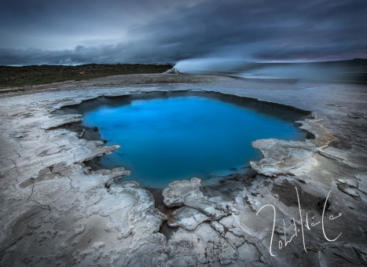
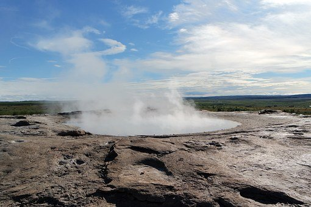
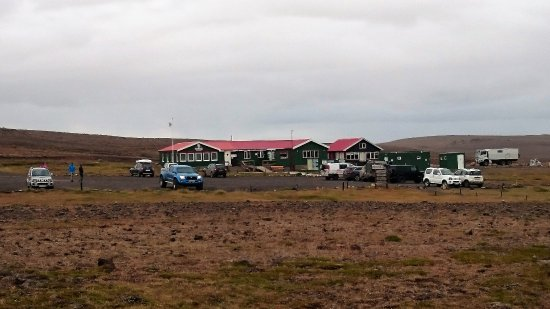

HVERAVELLIR | ||
|---|---|---|
|
HVERAVELLIR, UN SPA EN MITAD DE UN MAR DE LAVA Con aguas cálidas y cristalinas, así es Hveravellir, el manantial más exclusivo de Islandia. Por cierto, está rodeado… ¡De campos de lava! | 
| |
|
Las aguas termales de Hveravellir, Islandia, causan gran admiración entre los visitantes, tanto por los llamativos colores de sus aguas como por la belleza del entorno y las propiedades medicinales del lugar. Las aguas termales de Hveravellir constituyen uno de los destinos turísticos más visitados de Islandia. El entorno natural en el que se encuentran y su extraordinaria belleza hacen que sean catalogadas por muchos como las mejores del planeta. En Hveravellir, las características geológicas del lugar transportan al visitante a un mundo de ensueño. Al mismo tiempo, brindan la posibilidad de tener una experiencia de relajación e intercambio cultural inolvidable con los islandeses. | ||
|  | ||
|
Islandia se encuentra ubicada entre la placa euroasiática y la placa norteamericana, por lo que presenta una alta actividad geológica. De hecho, su origen es resultado de procesos volcánicos a lo largo de la dorsal mesoatlántica; esto trae como resultado la presencia de más de 200 volcanes, sismos y géiseres.
| ||
|
Las aguas termales de Hveravellir forman parte de lo que se denomina El Círculo Dorado, un trayecto muy concurrido por turistas, con cerca de 300 kilómetros de longitud. Este comienza y termina en Reikiavik y se adentra en lo más profundo de Islandia. En la reserva de Hveravellir, existe la posibilidad de pernoctar en el refugio o en camping y se tiene acceso a restaurante, vestuarios y baños por un precio razonable. También cuenta con duchas y zona de aparcamiento, entre otros servicios.
| ||
|
| ||
|  | ||
Comentarios | ||
|
¡Escribe un comentario!
| ||